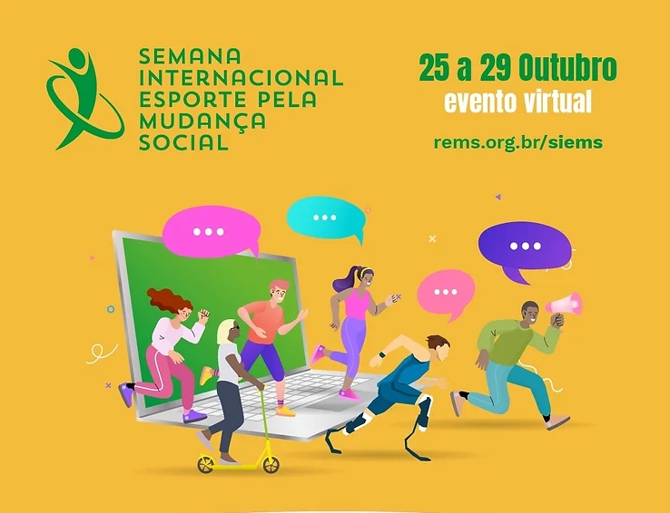
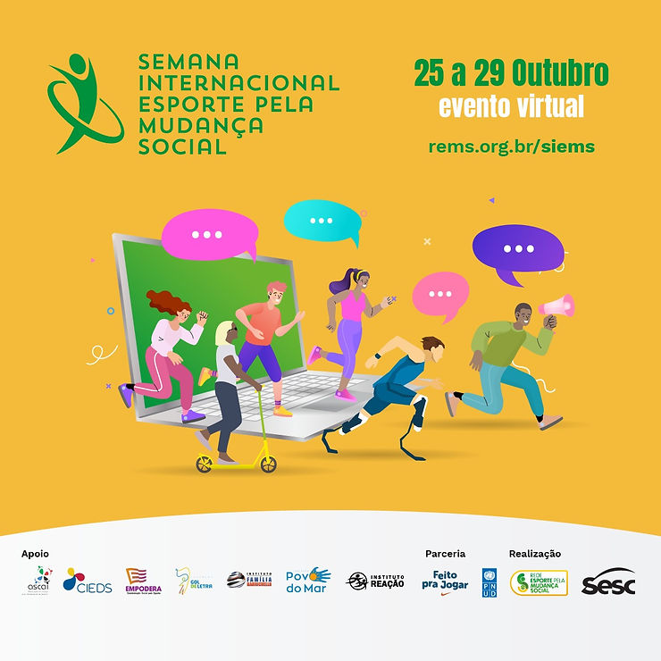

Entre 25 e 29 de outubro será realizada a 6ª SIEMS – Semana internacional: esporte pela mudança social – 2021. Pela primeira vez 100% virtual, por conta da pandemia, a “edição terá como focos principais o Pacto Global, a Agenda 2030 e o esporte para a mudança social pós-pandemia, considerando também o manifesto que foi desenvolvido pela REMS no último encontro nacional da rede”.
O evento é virtual e gratuito, com a programação organizada em dois turnos diários: das 10:00 às 11:30 e das 15:00 ás 16:30 e reúne representantes da sociedade civil, do governo, da academia, empresas e todas as demais pessoas interessadas neste tema.
Os inscritos terão oportunidade de ouvir 32 convidados, entre eles:
Aida dos Santos, atleta brasileira especialista no salto em altura, recentemente entrou para o hall da fama do COB. Ainda viveu com a família no Morro do Arroz em Niterói e mesmo com todas as dificuldades formou-se em Educação Física, Geografia e Pedagogia. Nas olimpíadas de Tóquio (1964) foi a única mulher da delegação brasileira, que viajou naquele ano sem técnico, sem material para competir e sem uniforme;
Ana Moser, ex-atleta profissional de voleibol, Criou em 2001 o Instituto Esporte & Educação, onde desenvolveu e dissemina uma metodologia de esporte educacional, com o objetivo de ampliar e qualificar a prática de educação física e esporte em todo o Brasil. Empreendedora social com várias premiações e membro do Conselho de Representantes da REMS.
Eliane Miada, fundadora e diretora de Gestão da ADD – Associação Desportiva para Deficientes, empreendedora social, com especialização em gestão do Terceiro Setor pela Fundação Getúlio Vargas e IGESC, Extensão universitária – Curso Educando para Transparência – FEA-USP . Atualmente dedica-se exclusivamente à gestão administrativa e financeira da entidade, sendo responsável pela elaboração, desenvolvimento, implementação e monitoramento de projeto e coordenação da área de captação de recursos.
Flávio Canto, Presidente do Instituto Reação, judoca, medalhista olímpico, apresentador de TV, palestrante, empresário, Flávio usa o esporte, seus valores e princípios para transformar vidas.
Joana Passos Miraglia, Diretora Geral do Instituto Superação, psicóloga, especialista em Psicologia do Esporte e MBA em Responsabilidade Social e Terceiro Setor.
Marcos Vinicius Moura e Silva, Educador no PRODHE CEPEUSP (Programa de Desenvolvimento Humano pelo Esporte do Centro de Práticas Esportivas da Universidade de São Paulo) há 26 anos.
Marije Holman, Gerente de Projetos na Woman Win, à qual se juntou em 2017. Gera uma carteira diversificada de parceiros de programas globais através do desenvolvimento de capacidades locais e apoio remoto. Marije é licenciada em Desporto, Gestão e Negócios, pela Universidade de Ciências Aplicadas de Amsterdã e tem uma formação no setor do esporte para o desenvolvimento.
Silvia Stuchi, Diretora-Fundadora Instituto Corrida Amiga, organização social que, desde 2014, promove o transporte a pé e temas relacionados, tais como: o direito à cidade, ocupação do espaço público, ética e cidadania.
Thom Freitas, Supervisor de Projetos da Fundação EPROCAD, atuando há mais de 8 anos com Esporte para o Desenvolvimento Humano. Com experiências de atuação em diversas comunidades da cidade e região metropolitana de São Paulo como Paraisópolis, Capão Redondo e São Remo, desde o início de sua formação profissional visa contribuir para o desenvolvimento de territórios, por meio da articulação comunitária e parcerias, e de pessoas, através da aplicação e disseminação da metodologia do Futebol3.
Confira a programação e garanta sua inscrição clicando aqui